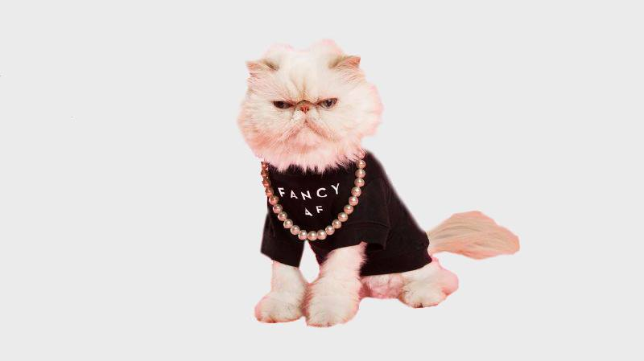

Stefan Sagmeister
Fashion branding and what I can learn from it
The Begining
Designer, art director, and overall creative genius. Stefan Sagmeister has proved to be an exciting and rewarding subject of study. Austrian born, Sagmeister currently lives and works in New York City. He is renowned for his work with the Rolling Stones, Talking Heads, the Guggenheim and many more. While learning about some of his great works from articles, books, and interviews I became very interested in Sagmeisters firm ‘Sagmeister & Walsh’ and the partnership with art director, graphic designer and illustrator, Jessica Walsh. I began to research many of the company projects. Sagmeister setup up his graphic design company 1993, Walsh joined in 2010. However, two projects in particular stood out to me. The Rebrand of ‘Milly’ - A New York based fashion company, and the advertising work produced for Aishti - A Lebanese luxury department chain. These projects are related to an area of design that I'm passionate about - fashion branding. Therefore, I was intrigued to learn more to enhance my own knowledge on the design practice. In this essay I will be focusing on Sagmeister relationship with fashion branding and what I can learn from it.
Milly Rebrand
Sagmeister & Walsh rebranded and completed a visual campaign for the New York fashion label Milly, for fall/winter16. The rich, bold campaign was constructed in print, digitally and across social media. Michelle Smith, who established the fashion label, originally focused on ‘retro and vintage’ inspired looks. A shift in design has lead her to a more ‘edgy, colourful and irreverent’ style. This reposition in the label has given way to a complete re-vamp of the brands visual identity.
With Sagmeister as creative director and the design, under Walsh’s guidence, they took 'the existing logo mark‘ a stylised 'M' with Milly written below, and came up with a creative and adaptable campaign. They decided to use a ‘changing logo type’ so that the identity could be flexible.
‘Each application tells a new story which can evolve as the clothes in each season do’ - Jessica Walsh.
One of my favourite ‘M’ animations is the flowers slowly growing up and around the ‘M’ itself. Its vibrant, contemporary, and exciting suggesting new growth in the brand. It immediately grabs your attention. A trend of edgy animations and props are used throughout to achieve the more daring diversion of the brand. Freezing icicles, snakes and unzipping skin are among just a few of the images and animations throughout the campaign. ‘Each application can reflect the themes and inspirations of the most recent seasons clothing line patterns’ -Jessica Walsh.
One of my favourite images, accompanied with an animation, is of a models face freezing over. The model is dressed in the brands garments, wearing icy tones. The expression on the face is fierce yet cold. Overall the animation is eye-catching and prominent.

Sagmeister and Walsh’s design captures ‘Milly’s’ identity journey with simply revamping the fashion labels look while keeping the essence that was originally intended by Smith. A campaign of 400 images and animations to accompany an influencer programme will roll out over the next year on social media.
‘Consumers are used to digesting large amounts of imagery and content from brands daily’ - Jessica Walsh
I found it interesting and knowledgeable when researching to see the effort made on adaptable design and how it made the rebrand much more efficient. Its something to reflect on in my own work as its important to provide a client with versatile work, as we are living in a rapidly changing society. I’ve also noticed how they have made everything adaptable to social media, and hard copy. On strolling through ‘Milly’s’ Instagram page, I can see the same images and animations that I have seen on poster and on the website. Something new and important to constantly consider in the design world, you are designing for multiple applications and mediums.
Aishti Projects
Aishtis, a luxury department store based in the middle east are more than familiar with the design firm. Sagmeister & Walsh manage the companies advertising, from their stylish packaging, to paper craft and body paint. The firm have been heavily involved in many projects with Aishti, Aizone and Minis. The most recent however, was their ‘by the sea campaign’ for the Aishiti foundation. Firstly I will discuss the main Aishti’s overall brand identity.
Designing, stationary to the logo, Sagmeister & Walsh took on a vibrant orange and black colour scheme . The materials were foil stamped with black and orange foils, and kissing couples were printed on the inside of the bags. A nice touch added, was the personalised boxes - a custom label for each, printed on the orange gift box, (a real sense of luxury!). The focus of the advertising campaign was the orange gift box. The box was turned into a symbol of luxury, therefore, the symbol of the brand. In 2010 the campaign was launched with just a single image of the box. The orange box became a building block for new imagery. It can be seen in many of the images for the campaign, the box taking centre stage.

I find the concept very interesting. The use of the orange box is very clever, they created a vision for customers - possessing this box will give you a sense richness. The box itself is shown as a desired item, before the consumer has even considered the desirable, luxurious designs on sale in store. Something as simple sets this store apart from others, adds the ‘wow’ factor. The personal touches, such as the personalised label is something, from a consumers point of view, that creates ‘above and beyond’ shopping experience your hoping to get, being in a store like Aishti. Similarly the highly successful designs achieved can be seen in Aizone's (a branch of Aishti with a target audience between 15-30 years of age), advertising and branding.
Designs were created for letterheads, business cards and envelopes with materials being used like foil stamping and silver foil. There is great attention to detail, down to the edges of the business cards, which were also stamped in silver foil. The focus of the identity is the two dots above the ‘i’. The stationary was accompanied by a series of images that the company presented in campaigns for newspapers , magazines and billboards throughout Lebanon. The task proved challenging as restriction included a black and white theme and the company requested for none of the clothes on sale to be featured in the campaign.

Similarly the attention to detail and touch of luxury can be seen in the Aizone identity. It shows how important the materials you choose can be. Also how you need to respect the restrictions a client gives you and work it to your advantage. This proved true to Sagmeister & Walsh. On seeing the finished black and white campaign, it showed that sometimes restrictions can be your answer. It was interesting watching the video of the project as Jessica described a trial and error process in getting the materials right. It prompted me to remember that things might not work out straight away, sometimes you need to think of new ways of achieving what you want. The follow up campaign restrictions were changed allowing some colour.
Autumn/Winter 2013, A bold, exciting and exuberant campaign. Positivity is the the vibes. These aspects together are used to reflect the essence of the brand. Well known body painter, Anastasia Durasova was commissioned to paint the faces of models for this project. Inspirational maxims such as ‘play hard’, ‘make your own luck’, ‘so it goes’, ‘go,go,go’ and ‘be free’ were painted across the faces of models. I found it interesting outside artists were introduced. Collaborations mean for a never-ending chance for new creative ideas and inspirations.

Following this, an illustration inspired campaign directed by Jessica Walsh was created. As illustration often depicts a 3d object or environment in 2d form, they decided to twist this notion. The outcome was, creating a 3d environment that looked like an illustration. Props for the sets were made from paper and drawn in a quirky, cartoon-like style that popped with colour. A series of accompanying videos with animated fashion items and figurines among vibrant settings and sceneries were created. A behind the scenes video that shows the construction of the sets has been filmed.

The campaign is visually brilliant. Its different, eye-catching and fun, still keeping the essence of the Aizone brand. I loved the concept! It shows how important concept is. It sets aside a great piece of work from a good piece. This is something to keep in mind, the thought behind everything you do, your reason for it. This is key to giving you a full piece rather than an empty one. It was also interesting watching the construction of the sets. Its important sometimes to be brought back to the practical side of things.
My Conclusion
In conclusion, on a wider scale ,I have learned a lot from Sagmeister himself. From simply reading through his book ‘things I have learned in my life so far’ it certainly opens your eyes and to something I need to work on, ‘worrying solves nothing’! The projects that I have studied have all been executed with Sagmeister being part of a team. I feel like this is something I will be introduced to more as I progress with my career. Teamwork can break people but if executed properly, as displayed is the projects I have studied, it can create masterpieces that would be impossible for one creative mind on its own. Its all about complimenting each other ‘helping other people helps me’ - Stefen Sagmeister. I have really learned a lot, and enjoyed investigating my own practice. From simply highlighting the importance of adaptable branding in the Milly identity to understanding the importance of concept behind every piece you design.
Bibliography
Books
- Stefan Sagmeister, Things I have Learned in My life So Far
Websites
- www.sagmeisterwalsh.com
- www.dezeen.com
- www.designboom.com
- www.creativebloq.com
Videos
- Youtube,Aïzone behind the scenes fall/winter campaign 2013-14
- Youtube, Aïzone behind the scenes fall/winter campaign 2011-12
- Youtube, Aïshti behind the scenes fall/winter 2016 - spring/summer 2017
- Youtube, Aïshti behind the scenes spring/summer 2012 campaign
- TED talk, 7 rules for making more happiness, Stefan Sagmeister
- TED talk, the power of time off, Stefan Sagmeister